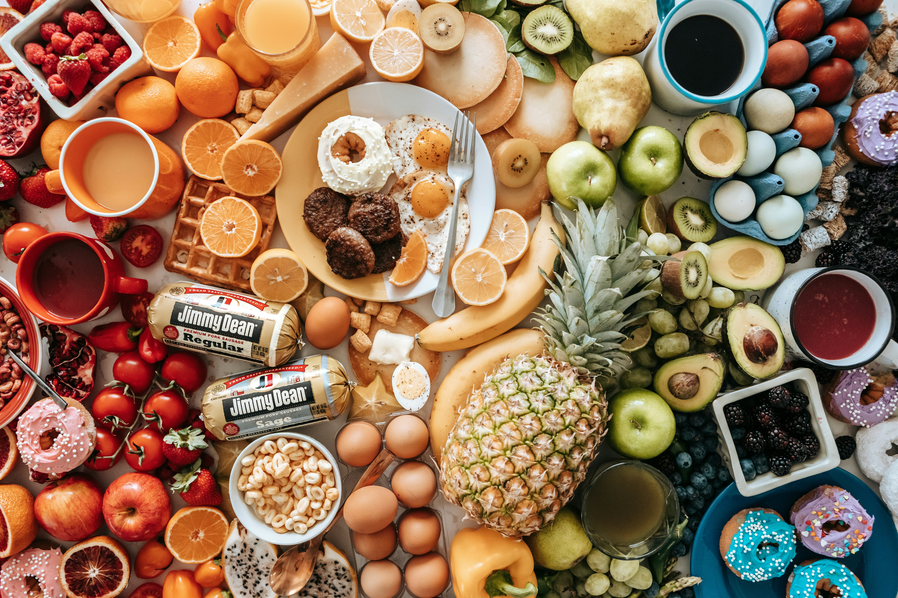
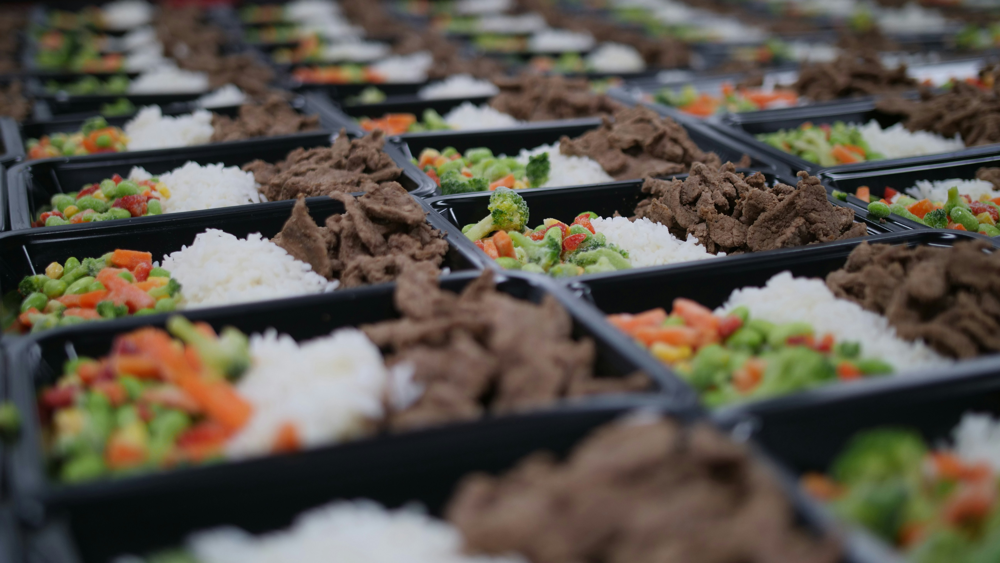
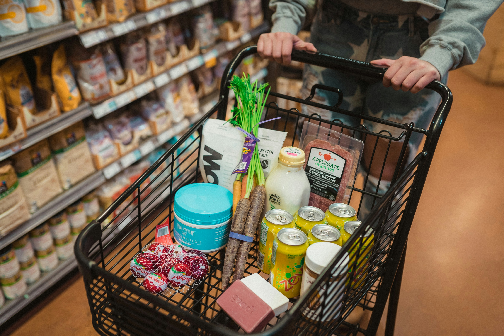

Nutrition for a Healthier You
Proper nutrition is one of the most important parts
of maintaining a healthy lifestyle. Whether your
goal is to build muscle, lose body fat, or improve
your overall health, the foods you eat provide
the energy and nutrients your body needs.
At Fitness Unity, we believe healthy eating should
be simple, balanced, and sustainable. Learn about
macronutrients, vitamins, minerals, supplements,
meal planning, and grocery shopping to help you
make better nutritional choices.
Understanding Macronutrients
Macronutrients are nutrients your body needs in
larger amounts. The three main macronutrients
are protein, carbohydrates, and fats.
Protein
Protein helps build and repair muscles,
supports recovery, and contributes to
many important functions in your body.
Food Sources
- Chicken and turkey
- Eggs and Greek yogurt
- Fish and lean beef
- Beans, lentils, and tofu
Protein provides approximately
4 calories per gram.
Carbohydrates
Carbohydrates are an important energy
source, particularly during exercise
and other physical activities.
Food Sources
- Rice and oats
- Potatoes and sweet potatoes
- Whole grain bread
- Fruits and vegetables
Carbohydrates provide approximately
4 calories per gram.
Healthy Fats
Dietary fats support hormone production,
cell function, and the absorption of
certain vitamins.
Food Sources
- Avocados
- Olive oil
- Almonds and walnuts
- Salmon and other fatty fish
Fats provide approximately
9 calories per gram.
Essential Vitamins and Minerals

Vitamins and minerals help support strong bones,
muscle function, energy metabolism, immunity,
and many other processes throughout the body.
Eating a variety of nutrient-rich foods is
an important way to obtain these nutrients.
Important Minerals
| Mineral |
Main Function |
Food Sources |
| Calcium |
Bones and muscle function |
Milk, yogurt, fortified soy milk |
| Magnesium |
Muscles, nerves, energy metabolism |
Nuts, spinach, whole grains |
| Potassium |
Fluid balance, nerves, muscles |
Potatoes, bananas, beans |
| Iron |
Helps transport oxygen in blood |
Meat, lentils, fortified cereals |
| Zinc |
Immune function and tissue repair |
Beef, seafood, pumpkin seeds |
Important Vitamins
Vitamin D
Supports calcium absorption, bones,
and normal muscle function.
Sources include fortified foods,
fatty fish, and egg yolks.
Vitamin C
Supports immune function, collagen
production, and iron absorption.
Sources include citrus fruits,
strawberries, and bell peppers.
B Vitamins
Help the body obtain energy from food
and support normal cell function.
Sources include meat, eggs, legumes,
and whole grains.
Nutrition Tip: Vitamin and mineral requirements
depend on factors such as age, sex, and health.
More is not always better, and excessive amounts
of some supplements can be harmful.
Meal Plans for Different Fitness Goals

Meal planning can make healthy eating easier.
Your food portions and calorie needs will
depend on your body, activity level, and goals.
These are sample meal combinations rather
than personalized diets.
Muscle Building Meal Plan
Muscle building generally requires consistent
resistance training, sufficient protein,
and enough calories to support recovery
and growth.
- Breakfast: Eggs, oatmeal, banana, and milk
- Lunch: Chicken, rice, broccoli, and olive oil
- Snack: Greek yogurt, nuts, and berries
- Dinner: Salmon, potatoes, and vegetables
Fat Loss Meal Plan
Sustainable fat loss generally involves
consuming fewer calories than your body
uses while continuing to eat enough
protein, fiber, and essential nutrients.
- Breakfast: Greek yogurt, berries, and oats
- Lunch: Chicken breast, quinoa, and vegetables
- Snack: Apple and cottage cheese
- Dinner: Lean turkey, roasted potatoes, and salad
Healthy Maintenance Meal Plan
A maintenance plan focuses on balanced
meals that support everyday activity,
health, and stable body weight.
- Breakfast: Whole grain toast, eggs, and fruit
- Lunch: Turkey sandwich, salad, and yogurt
- Snack: Banana and peanut butter
- Dinner: Chicken stir-fry with rice and vegetables
Healthy Grocery Shopping Guide

You do not need expensive foods to maintain a
nutritious diet. Many affordable grocery items
can be used to prepare balanced meals throughout
the week.
Protein Foods
- Chicken breast
- Eggs
- Canned tuna
- Greek yogurt
- Beans and lentils
Grains and Starches
- Rice
- Oatmeal
- Potatoes
- Whole grain pasta
- Whole wheat bread
Fruits and Vegetables
- Bananas
- Apples
- Frozen berries
- Broccoli
- Spinach and carrots
Healthy Fat Sources
- Olive oil
- Avocados
- Peanut butter
- Almonds
- Walnuts
Grocery Tip: Plan meals before shopping, compare
prices, consider frozen produce, and prepare
extra portions for meals later in the week.
Understanding Fitness Supplements
Supplements can be useful in certain situations,
but they should not replace a balanced diet.
Not everyone needs supplements, and their
effectiveness depends on individual circumstances.
Protein Powder
Protein powder can be a convenient
way to increase protein intake when
it is difficult to meet your needs
through regular meals.
Creatine Monohydrate
Creatine is a well-studied supplement
that can support strength and
performance during repeated,
high-intensity exercise.
Vitamin D
Vitamin D supports normal bone and
muscle function. Supplements may
be appropriate when dietary intake
or vitamin D status is inadequate.
Omega-3
Omega-3 fats are important for
normal body function. Fatty fish,
walnuts, and certain seeds are
dietary sources of omega-3 fats.
Supplement Tip: Speak with a healthcare
professional before taking supplements,
particularly if you have a medical condition
or take medications.
Building Better Eating Habits
- Eat a variety of nutrient-rich foods.
- Include fruits and vegetables regularly.
- Choose protein sources that support your needs.
- Stay hydrated throughout the day.
- Include fiber-rich foods such as whole grains and beans.
- Prepare meals ahead of time when possible.
- Avoid relying on supplements instead of meals.
- Focus on consistency rather than perfection.
Learn More About Nutrition
The following resources provide additional
nutrition and dietary information.
Explore Fitness Calculators